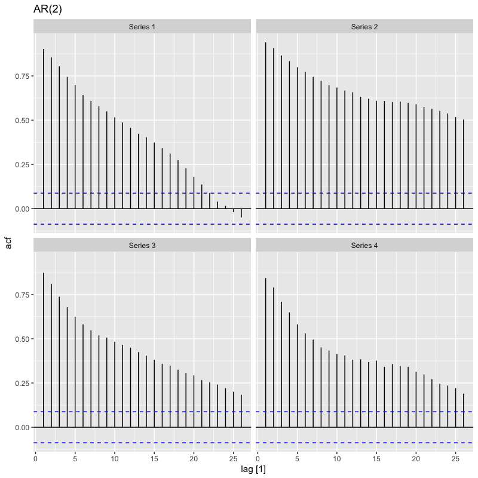
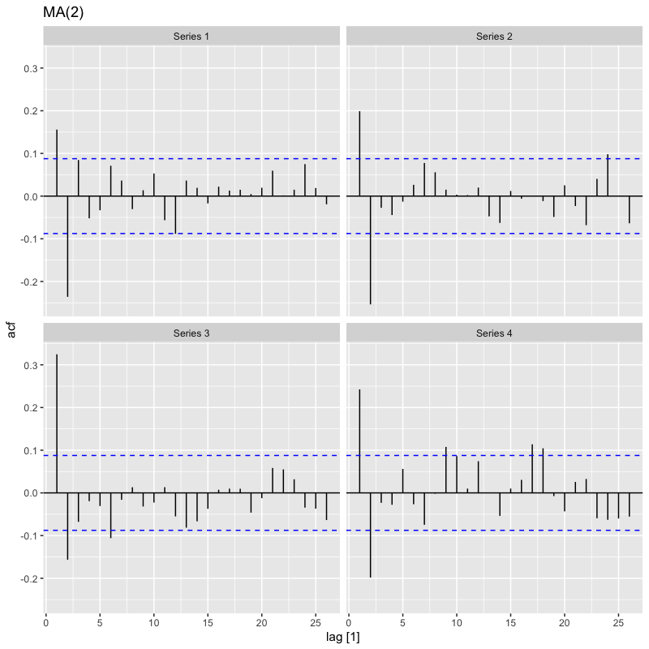
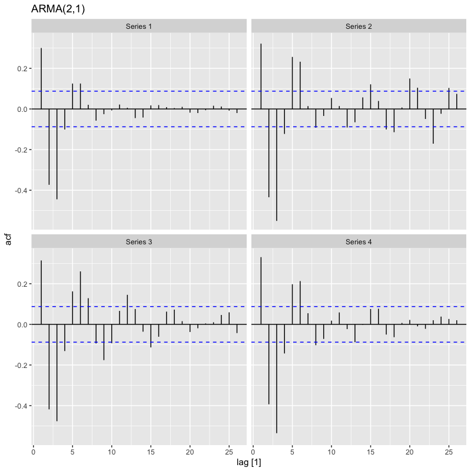
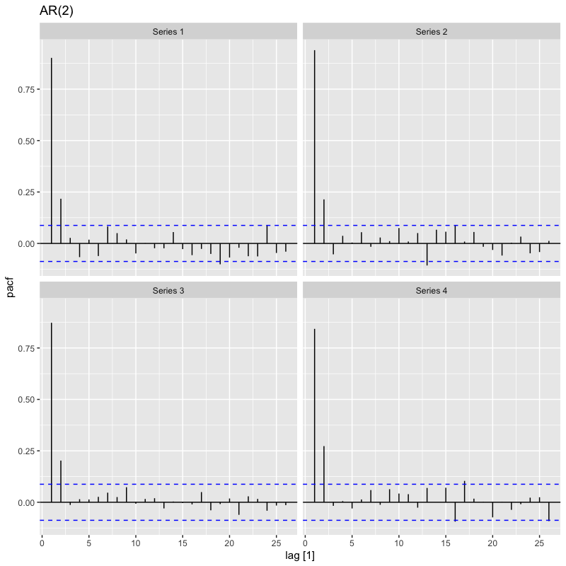
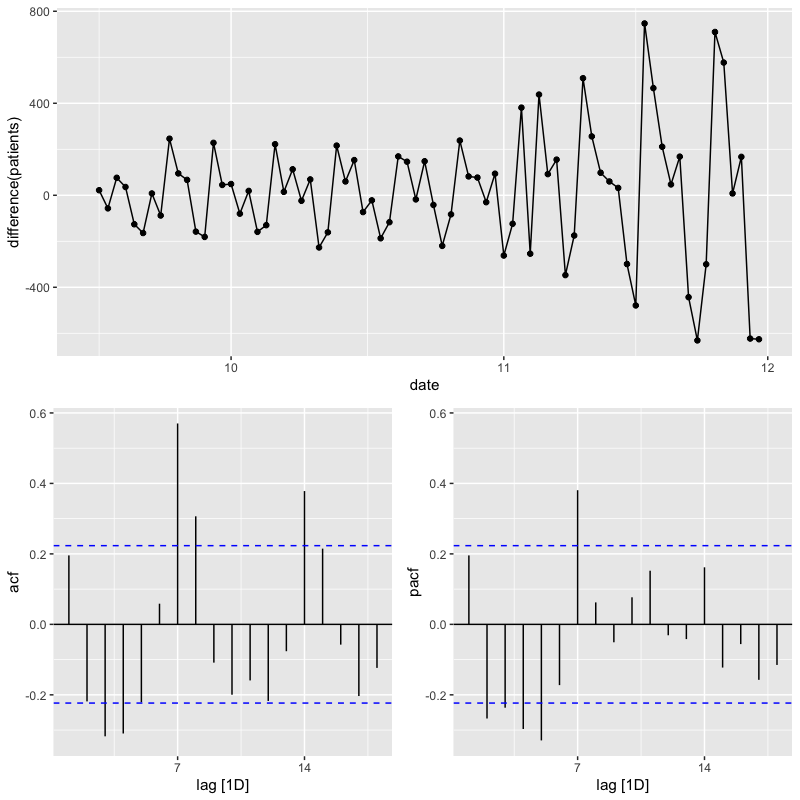
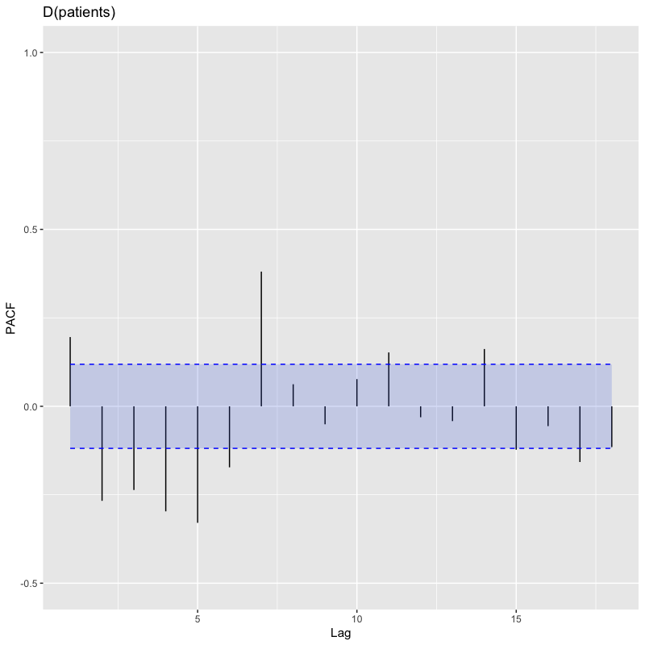
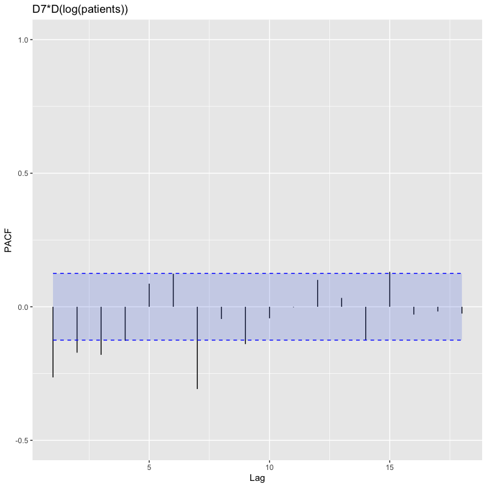
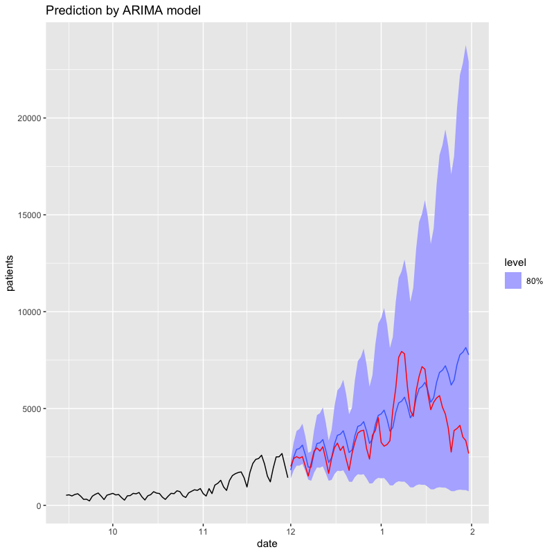

時系列解析
モデルの推定と予測
(Press ? for help, n and p for next and previous slide)
講義概要
- 第1回 : 時系列の基本モデル
- 第2回 : モデルの推定と予測
時系列解析の復習
時系列解析とは
- 時系列データ
- 時間軸に沿って観測されたデータ
- 観測の順序に意味がある
- 異なる時点間での観測データの従属関係が重要
- 独立性にもとづく解析は行えない
- そのままでは大数の法則や中心極限定理は使えない
- 時系列解析の目的
- 時系列データの特徴を効果的に記述すること
- 時系列モデルの推定と評価
時系列モデルと定常性
確率過程
時間を添え字として持つ確率変数列
\begin{equation} X_{t},\;t=1,\dotsc,T \end{equation}- 弱定常過程 : 以下の性質をもつ確率過程 \(X_t\)
- \(X_{t}\)の平均は時点\(t\)によらない
- \(X_{t}\)と\(X_{t+h}\)の共分散は時点\(t\)によらず時差\(h\)のみで定まる
- 特に\(X_{t}\)の分散は時点\(t\)によらない (\(h=0\)の場合)
- 多くの場合，弱定常性を考えれば十分なので 単に 定常 ということが多い
- 定常でない確率過程は 非定常 であるという
ホワイトノイズ
定義
平均\(0\)，分散\(\sigma^{2}\) である確率変数の 確率分布\(P\)からの 独立かつ同分布な確率変数列
\begin{equation} X_{t} = \epsilon_{t}, \quad \epsilon_{t} \overset{i.i.d.}{\sim} P \end{equation}- 記号 \(\mathrm{WN}(0,\sigma^{2})\) で表記
- 定常 な確率過程
トレンドのあるホワイトノイズ
定義
\(\mu,\alpha\) を定数として
\begin{equation} X_{t}=\mu+\alpha t+\epsilon_{t}, \quad \epsilon_{t} \sim \mathrm{WN}(0,\sigma^2) \end{equation}で定義される確率過程
- 非定常 な確率過程
- トレンド項(平均値の変化)は現象に応じて一般化される
ランダムウォーク
定義
\(X_0\) を定数もしくは確率変数として
\begin{equation} X_{t}=X_{t-1}+\epsilon_{t}, \quad \epsilon_{t} \sim \mathrm{WN}(0,\sigma^2) \end{equation}で帰納的に定義される確率過程
- 分散が時間とともに増加・記憶のあるモデル
- 非定常 な確率過程
自己回帰過程
定義 (次数\(p\)のARモデル)
\(a_1,\dotsc,a_p\)を定数とし， \(X_1,\dotsc,X_p\)が初期値として与えられたとき，
\begin{equation} X_{t}=a_1X_{t-1}+\cdots+a_pX_{t-p}+\epsilon_{t}, \quad \epsilon_{t} \sim \mathrm{WN}(0,\sigma^2) \end{equation}で帰納的に定義される確率過程
- ランダムウォークの一般化
- 無限長の記憶のある(忘却しながら記憶する)モデル
- 定常にも非定常にもなる
移動平均過程
定義 (次数\(q\) のMAモデル)
\(b_1,\dotsc,b_q\)を定数とし， \(X_1,\dotsc,X_q\)が初期値として与えられたとき
\begin{equation} X_{t} = b_1\epsilon_{t-1}+\cdots+b_q\epsilon_{t-q}+\epsilon_{t}, \quad \epsilon_{t} \sim \mathrm{WN}(0,\sigma^2) \end{equation}で定義される確率過程
- 有限長の記憶のあるモデル
- 定常 な確率過程
自己回帰移動平均過程
定義 (次数\((p,q)\)のARMAモデル)
\(a_1,\dotsc,a_p,b_1,\dotsc,b_q\) を定数とし， \(X_1,\dotsc,X_{\max\{p,q\}}\) が初期値として与えられたとき
\begin{align} X_{t} &= a_1X_{t-1}+\cdots+a_pX_{t-p}\\ &\quad+ b_1\epsilon_{t-1}+\cdots+b_q\epsilon_{t-q} +\epsilon_{t},\\ &\quad \epsilon_{t} \sim \mathrm{WN}(0,\sigma^2) \end{align}で帰納的に定まる確率過程
- AR・MAモデルの一般化・基本的な時系列モデル
- 定常にも非定常にもなる
自己共分散・自己相関
- 弱定常な確率過程 : \(X_{t},\;t=1,\dotsc,T\)
\(X_{t}\) と \(X_{t+h}\) の共分散は時点\(t\)によらずラグ\(h\)のみで定まる
自己共分散 (定常過程の性質よりラグは\(h\ge0\)を考えればよい)
\begin{equation} \gamma(h) = \mathrm{Cov}(X_{t},X_{t+h}) \end{equation}\(X_{t}\) と \(X_{t+h}\) の相関も\(t\)によらずラグ\(h\)のみで定まる
自己相関
\begin{equation} \rho(h) =\gamma(h)/\gamma(0) = \mathrm{Cov}(X_{t},X_{t+h})/\mathrm{Var}(X_{t}) \end{equation}
- 異なる時点間での観測データの従属関係を要約するための最も基本的な統計量
Figure 1: 同じモデルに従うAR過程の例

Figure 2: AR過程の自己相関

Figure 3: 同じモデルに従うMA過程の例

Figure 4: MA過程の自己相関

Figure 5: 同じモデルに従うARMA過程の例

Figure 6: ARMA過程の自己相関
実習(復習)
R : 自己相関・自己共分散の計算・描画
関数 forecast::ggAcf()
ggAcf(x, lag.max = NULL, type = c("correlation", "covariance", "partial"), plot = TRUE, na.action = na.contiguous, demean = TRUE, ...) #' x: 時系列データ #' lag.max: 計算するラグの最大値 #' type: 標準は相関, 共分散と偏相関を選ぶこともできる #' plot: 描画するか否か #' na.action: 欠損値の処理，標準は欠損を含むと計算しない #' demean: 共分散の計算において平均を引くか否か典型的な使い方
ggAcf(arima.sim(model = list(ar = c(0.8, -0.64), ma = c(-0.5)), n = 200))
練習問題
- 以下の問に答えなさい
- 同じAR過程のモデルから生成した時系列の自己相関を比較しなさい (前回の練習問題を利用すればよい)
- MA過程についても同様な比較を行いなさい
- ARMA過程についても同様な比較を行いなさい
ARモデルの推定
自己共分散・自己相関
- 平均\(0\)の弱定常な確率過程 : \(X_{t},\;t=1,\dotsc,T\)
\(X_{t}\) と \(X_{t+h}\) の共分散は時点\(t\)によらずラグ\(h\)のみで定まる
自己共分散
\begin{equation} \gamma(h) = \mathrm{Cov}(X_{t},X_{t+h}) = \mathbb{E}[X_{t}X_{t+h}] \end{equation}\(X_{t}\)と\(X_{t+h}\)の相関も\(t\)によらずラグ\(h\)のみで定まる
自己相関係数
\begin{equation} \rho(h) =\mathrm{Cov}(X_{t},X_{t+h})/\mathrm{Var}(X_{t}) =\gamma(h)/\gamma(0) \end{equation}
自己共分散とARモデル
AR(p)モデル :
\begin{equation} X_{t} = a_{1}X_{t-1}+a_{2}X_{t-2}+\dotsb+a_{p}X_{t-p}+\epsilon_{t} \end{equation}係数と自己共分散の関係
\begin{align} \gamma(h) &= \mathbb{E}[X_{t}X_{t+h}]\\ &= \mathbb{E}[X_{t}(a_{1}X_{t+h-1}+\dotsb+a_{p}X_{t+h-p}+\epsilon_{t+h})]\\ &= a_{1}\mathbb{E}[X_{t}X_{t+h-1}] +\dotsb +a_{p}\mathbb{E}[X_{t}X_{t+h-p}] +\mathbb{E}[X_{t}\epsilon_{t+h}]\\ &= a_{1}\gamma(h-1) +\dotsb+ a_{p}\gamma(h-p) \end{align}
Yule-Walker方程式
\(1\le h\le p\) を考えると以下の関係が成り立つ
\begin{equation} \begin{pmatrix} \gamma(1)\\ \gamma(2)\\ \vdots\\ \gamma(p) \end{pmatrix} = \begin{pmatrix} \gamma(0)&\gamma(-1)&\dots&\gamma(-p+1)\\ \gamma(1)&\gamma(0)&\dots&\gamma(-p+2)\\ \vdots&\vdots&\ddots&\vdots\\ \gamma(p-1)&\gamma(p-2)&\dots&\gamma(0) \end{pmatrix} \begin{pmatrix} a_{1}\\ a_{2}\\ \vdots\\ a_{p} \end{pmatrix} \end{equation}- 行列は Toeplitz 行列と呼ばれる
- 行列が正則ならばARの係数は一意に求まる
偏自己相関
AR(p)モデル
\begin{equation} X_{t} = a_{1}X_{t-1}+a_{2}X_{t-2}+\dotsb+a_{p}X_{t-p}+\epsilon_{t} \end{equation}ラグ\(p\)の 偏自己相関係数
AR(p)モデルを仮定したときの\(a_{p}\)の推定値 (Yule-Walker方程式の解)
ラグ\(p\)の特別な 自己相関係数
\(a_{1}=a_{2}=\dotsb=a_{p-1}=0\)のときの\(a_{p}\) (特殊なモデルにおける解釈)
\begin{equation} \mathbb{E}[X_{t}X_{t+p}]=a_{p}\mathbb{E}[X_{t}X_{t}] \;\Rightarrow\; \gamma(p)=a_{p}\gamma(0) \;\Rightarrow\; \rho(p)=a_{p} \end{equation}

Figure 7: AR過程の偏自己相関
Figure 8: MA過程の偏自己相関

Figure 9: ARMA過程の偏自己相関
モデルの推定に関する補足
- ARMAモデルの推定方法は主に以下の3つ
- Yule-Walker方程式 (AR過程)
- 最小二乗
- 予測誤差の平方和の最小化
- 回帰と同じだが，従属系列のため多重共線性に注意
- 最尤推定
- WNの分布を仮定して同時尤度関数を設定
- 非線形最適化を行う
- 一般にモデルは近似なので，どの推定が良いかは問題による
非定常過程の変換
- 定常過程とみなせるように変換して分析
階差の利用
\begin{equation} X_{t}=X_{t-1}+\epsilon_{t} \quad\Rightarrow\quad Y_{t}=X_{t}-X_{t-1}=\epsilon_{t} \end{equation}- ランダムウォーク : 階差をとるとホワイトノイズ(定常過程)
- ARIMA過程 : 階差をとるとARMA過程になる確率過程
対数変換の利用
\begin{equation} X_{t}=(1+\epsilon_{t})X_{t-1} \quad\Rightarrow\quad Y_{t}=\log(X_{t})-\log(X_{t-1}) =\log(1+\epsilon_{t}) \simeq\epsilon_{t} \end{equation}- 対数変換と階差で微小な比率の変動を抽出
演習
問題
以下で定義されるMA(1)について問に答えなさい
\begin{equation} X_{t} = b_{1}\epsilon_{t-1}+\epsilon_{t}, \quad \epsilon_{t} \sim \mathrm{WN}(0,\sigma^2) \end{equation}- ラグ2までの自己共分散係数を求めなさい
- 自己相関係数とパラメタ\(b_{1}\)が満すべき方程式を求めなさい
解答例
平均0であることに注意して定義通り計算する
\begin{align} \gamma(0) &= \mathbb{E}[X_{t}X_{t}] = \mathbb{E}[(b_{1}\epsilon_{t-1}+\epsilon_{t})^{2}]\\ &= b_{1}^{2}\mathbb{E}[\epsilon_{t-1}^{2}] +2b_{1}\mathbb{E}[\epsilon_{t-1}\epsilon_{t}] +\mathbb{E}[\epsilon_{t}^{2}]\\ &= (b_{1}^{2}+1)\sigma^{2}\\ \gamma(1) &= \mathbb{E}[X_{t}X_{t+1}] = \mathbb{E}[(b_{1}\epsilon_{t-1}+\epsilon_{t})(b_{1}\epsilon_{t}+\epsilon_{t+1})]\\ &= b_{1}^{2}\mathbb{E}[\epsilon_{t-1}\epsilon_{t}] +b_{1}\mathbb{E}[\epsilon_{t-1}\epsilon_{t+1}] +b_{1}\mathbb{E}[\epsilon_{t}\epsilon_{t}] +\mathbb{E}[\epsilon_{t}\epsilon_{t+1}]\\ &= b_{1}\sigma^{2}\\ \gamma(2) &= \mathbb{E}[X_{t}X_{t+2}] = \mathbb{E}[(b_{1}\epsilon_{t-1}+\epsilon_{t})(b_{1}\epsilon_{t+1}+\epsilon_{t+2})]\\ &= b_{1}^{2}\mathbb{E}[\epsilon_{t-1}\epsilon_{t+1}] +b_{1}\mathbb{E}[\epsilon_{t-1}\epsilon_{t+2}] +b_{1}\mathbb{E}[\epsilon_{t}\epsilon_{t+1}] +\mathbb{E}[\epsilon_{t}\epsilon_{t+2}]\\ &= 0 \end{align}
ラグ3以降も自己共分散は0となることに注意する
\begin{align} \gamma(0) &= (b_{1}^{2}+1)\sigma^{2}\\ \gamma(1) &= b_{1}\sigma^{2} \end{align}\(\sigma^{2}\)を消去して以下が得られる
\begin{equation} \gamma(1)/\gamma(0) =\frac{b_{1}}{b_{1}^{2}+1} =\rho(1) \end{equation}\begin{equation} \rho(1)b_{1}^{2}-b_{1}+\rho(1)=0 \end{equation}\(\rho(1)\)の値によっては解が求められない場合もある
実習
R : ARモデルの推定
関数
stats::ar()ar(x, aic = TRUE, order.max = NULL, method = c("yule-walker", "burg", "ols", "mle", "yw"), na.action, series, ...) #' x: 時系列データ (ts クラスが望ましい) #' aic: AICを計算するか否か #' order.max: 計算すべき最大次数 (既定値は時系列の長さから規則的に計算) #' method: 係数の推定方法典型的な使い方
x <- arima.sim(model = list(ar = c(0.7,-0.6, 0.5)), n = 1000) ar(x) ar(x, method = "mle")- 既定値ではAIC(情報量規準)を用いて次数が自動的に決定される
R : ARIMAモデルの推定
関数
forecast::auto.arima()auto.arima(y, d = NA, D = NA, max.X, start.X, stationary = FALSE, seasonal = TRUE, ic = c("aicc", "aic", "bic"), method = NULL, allowdrift = TRUE, allowmean = TRUE, ...) #' y: 時系列データ #' d,D: 階差の次数(Dは季節成分)．指定しなければ適切な範囲で探索する． #' max.X, start.X: 探索範囲を指定するための変数 (X = p,q,P,Q,d,D) #' stationary: 定常なモデルに限定して探索するか否か #' seasonal: 季節成分を含むモデルを探索するか否か #' mathod/allowdrif/allowmeans: '?forecast::Arima()' を参照- 個別のモデルの推定には関数
forecast::Arima()が利用される 典型的な使い方
x <- arima.sim(model = list(ar = c(0.7,-0.6,0.5)), n = 1000) auto.arima(x) y <- arima.sim(list(order = c(2,1,1), ar = c(0.8,-0.64), ma = c(-0.5)), n = 1000) auto.arima(y)
- 個別のモデルの推定には関数
R : モデルを扱うための補助的な関数
関数
stats::fitted()あてはめ値の取り出しfitted(object, ...) #' object: 推定された時系列モデル．関数ar(),auto.arima()などの返値- fitted.values() でも可
関数
stats::residuals()残差の取り出しresiduals(object, ...) #' object: 推定された時系列モデル- resid() でも可
R : モデルの評価
関数
forecast::checkresiduals()checkresiduals(object, lag, test, plot = TRUE, ...) #' object: 推定された時系列モデル．関数ar(),auto.arima()などの返値 #' lag: 検定に用いるラグの長さ #' test: 検定方法の設定，あるいは検定の有無 #' plot: 描画するか否か- 描画には関数
forecast::ggtsdisplay()が利用される 典型的な使い方
y <- arima.sim(list(order = c(2,1,1), ar = c(0.8,-0.64), ma = c(-0.5)), n = 1000) z <- auto.arima(y) summary(z) # 推定されたモデルの概要 checkresiduals(z) # 残差の描画と検定
- 描画には関数
練習問題
- 以下の問に答えなさい
- AR過程を生成し，関数
ar()を用いて係数を推定しなさい - ARMA過程を生成し，関数
auto.arima()を用いて係数を推定しなさい - 推定結果の妥当性を残差の自己相関係数を調べることによって確認しなさい
- AR過程を生成し，関数
非定常過程の変換
- 定常過程とみなせるように変換して分析
階差の利用
\begin{equation} X_{t}=X_{t-1}+\epsilon_{t} \quad\Rightarrow\quad Y_{t}=X_{t}-X_{t-1}=\epsilon_{t} \end{equation}- ランダムウォーク : 階差をとるとホワイトノイズ(定常過程)
- ARIMA過程 : 階差をとるとARMA過程になる確率過程
対数変換の利用
\begin{equation} X_{t}=(1+\epsilon_{t})X_{t-1} \quad\Rightarrow\quad Y_{t}=\log(X_{t})-\log(X_{t-1}) =\log(1+\epsilon_{t}) \simeq\epsilon_{t} \end{equation}- 対数変換と階差で微小な比率の変動を抽出
R : 関数 zoo()
時系列クラス
zooを作成する関数library(zoo) # forecast を利用すると自動的に読み込まれる zoo(x = NULL, order.by = index(x), frequency = NULL, ...) ## x: ベクトル，行列 ## order.by: 成分の目盛 ## frequency: 季節成分の周期 x.zoo <- zoo(x, # データに日付の情報を付加する例 (Dateクラスで指定) order.by = seq(from=as.Date("2021-01-01"), to=as.Date("2021-12-31"), by=1)) start(x.zoo) # index(x.zoo)[1] 最初の日付 end(x.zoo) # index(x.zoo)[length(x.zoo)] 最後の日付- その他の詳細は
?zooを参照
- その他の詳細は
R : 関数 window()
時系列から部分系列を切り出す関数
window(x, start = NULL, end = NULL) ## x: ベクトル，行列 ## start: 開始時点 ## end: 終了時点 window(x, # データに日付の情報が入っている場合 (zooの例) start="2021-12-01", # Dateクラスの標準の書き方 end="2021/12/31") # Dateクラスはこちらでも解釈可能- その他の詳細は
?stats::windowを参照
- その他の詳細は
練習問題
東京の気候データを用いて以下の問に答えなさい
tw_data <- read.csv("data/tokyo_weather.csv")- 気温のデータを
zooクラスに変換しなさい - 気温のデータおよびその階差の性質を検討しなさい
- 関数
auto.arima()を用いてモデルを作成しなさい
- 気温のデータを
モデルによる予測
モデルによる予測
- 推定したモデルを用いて\(n\)期先を予測
- ARモデル : 観測時点までの観測値を用いて回帰
- MAモデル : 観測時点までのホワイトノイズで回帰
- ARMAモデル : 上記の複合
- いずれも \(n\)が大きいと不確定性が増大
- 階差による変換は累積(階差の逆変換)により推定
Figure 10: ホワイトノイズの予測

Figure 11: ランダムウォークの予測
Figure 12: ARMA 過程の予測
分解による予測
トレンド成分+季節成分+ランダム成分への分解
\begin{equation} X_{t}=T_{t}+S_{t}+R_{t} \end{equation}- トレンド成分 : 時間の関数やランダムウォークなどを想定
- 季節成分 : 周期的な関数を想定
- ランダム成分 : ARMAモデルなどを想定
- 分解の考え方
- ランダム成分 : 適切な幅の移動平均が0
- 季節成分 : 1周期の平均が0
解析事例
COVID-19 の感染者数の分析
- 厚生労働省の COVID-19 のデータ
- 陽性者数 (新規・累積)
- 重症者数 (推移・性別・年齢別)
- 死者数 (推移・性別・年齢別・累積)
- 入院治療等を要する者等推移
- 集団感染等発生状況
- 以下で用いるデータ
- 日毎の全国・各都道府県の新規陽性者数 (感染者数) https://covid19.mhlw.go.jp/public/opendata/newly_confirmed_cases_daily.csv
感染者数の推移

Figure 13: 全国の感染者数
第3波における感染者数の推移

Figure 14: 第3波の感染者数
基礎分析 (分析対象 : 2020/9/15-11/30)

Figure 15: 時系列 (階差)
Figure 16: 自己相関 (階差)

Figure 17: 偏自己相関 (階差)

Figure 18: 時系列 (対数変換+階差)
Figure 19: 自己相関 (対数変換+階差)
Figure 20: 偏自己相関 (対数変換+階差)

Figure 21: 時系列 (対数変換+階差+7日階差)
Figure 22: 自己相関 (対数変換+階差+7日階差)

Figure 23: 偏自己相関 (対数変換+階差+7日階差)
ARIMA モデルによる推定
- 推定された ARIMA モデル
Series: ltrain
ARIMA(5,1,1) with drift
Coefficients:
ar1 ar2 ar3 ar4 ar5 ma1 drift
-0.0390 -0.3381 -0.3426 -0.3210 -0.3069 -0.3880 0.0192
s.e. 0.1664 0.1077 0.1074 0.1096 0.1229 0.1488 0.0074
sigma^2 = 0.06258: log likelihood = 0.2
AIC=15.59 AICc=17.74 BIC=34.24

Figure 24: あてはめ値

Figure 25: 診断プロット

Figure 26: 予測値 (60日分)
第8波における感染者数の推移
Figure 27: 第8波の感染者数
ARIMA モデルによる推定
- ARIMA モデルのあてはめ
- (対象区間 : 2022/11/01-11/30)
Series: log(train)
ARIMA(2,1,2) with drift
Coefficients:
ar1 ar2 ma1 ma2 drift
-0.3045 -0.4668 -0.9025 -0.0975 0.0210
s.e. 0.4011 0.1644 0.4845 0.4748 0.0042
sigma^2 = 0.1052: log likelihood = -8.16
AIC=28.31 AICc=32.13 BIC=36.52
Figure 28: 診断プロット
Figure 29: あてはめ値
Figure 30: 予測値 (2023/01/16まで)
まとめ
- 感染者数の推移は非定常なデータ
構造が時不変と考えられる区間を捉えれば
- 時系列の適切な変換 (指数的な増大のため対数変換)
- 基本的なARMAモデル (階差系列にARMAモデルを適用)
の組み合わせである程度の分析は可能
実習
R : 時系列の予測 forecast()
パッケージ
forecastの利用forecast(object, h) ## object: ar また arima による推定結果 ## h: h期先の予測 (指定しないと2周期または10期先を予測) x.fit <- auto.arima(x, d=1, D=1) x.prd <- forecast(x.fit, h=10) x.prd$mean # 予測値 (信頼区間は $upper/$lower) plot(x.prd) # 全体を視覚化- 詳細は
?forecastを参照
- 詳細は
R : 時系列の分解 StructTS()
トレンドの構造を仮定して分解する関数
StructTS(x, type = "level", fixed = NULL, ...) ## x: 時系列データ ## type: "level" 平均の変動をランダムウォークでモデル化 ## "trend" 平均と傾きをランダムウォークでモデル化 ## "BSM" 季節成分を含むモデル (frequencyが必要) ## fixed: ホワイトノイズの分散の指定 x.sts <- StructTS(x, type = "trend", fixed = c(0.1,NA,NA)) ## 平均のホワイトノイズの分散を0.1，傾きとランダム成分の分散は推定 forecast(x.sts, h=10) # predictを使うことも可- 詳細は
?StructTSを参照 - 分解を行う関数は
decompose, stlなどもある
- 詳細は
練習問題
- 以下の問に答えなさい
AirPassengersデータを用いて分析・予測を行いなさい- COVID-19のデータを用いて分析・予測を行いなさい https://covid19.mhlw.go.jp/public/opendata/newly_confirmed_cases_daily.csv